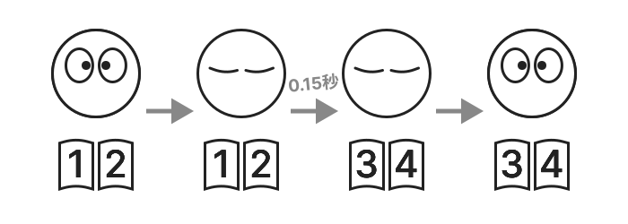

FlipByBlink
まばたきだけでページめくりができる電子書籍アプリ


概要
特殊な機能が1つだけ。目を閉じる時間を意識的にわずかに長くさせたまばたきでページめくりが出来ます。iPhone、iPad用アプリ。
上記の機能以外はシンプルで一般的な電子書籍リーダーアプリです。
ページめくりの仕組み


閉瞼を少し長めに行うとページ送りを行われ、目を開けたタイミングでは既に次のページに遷移した状態になります。普通のまばたきではページめくりされません。
デバイス内蔵のカメラやセンサーでまばたきを検知します。
一般的な電子書籍アプリ同様に、画面タップや画面スワイプでもページめくりできます。
電子書籍フォーマット
- 「固定レイアウト」書籍のみを対象。例えば紙本をそのまま転用したものや漫画など
- PDFファイルやZIPファイルのインポートに対応
ユースケース
- 一般的な読書
- 楽譜を見ながら楽器を演奏
- レシピ本を確認しながら料理
- 電車やバスでの読書
- 身体障害を抱える方の読書

サポートデバイス
まばたきを検出するためにApple製フレームワークであるARKit/FaceTrackingAPIを使用しています。そのためTrueDepthカメラ、もしくはA12Bionic以降のチップが必要です。
⚠️ サポート対象外のデバイス
- iPhone
- 6s
- 6s Plus
- 7
- 7 Plus
- 8
- 8 Plus
- SE 第1世代
- iPad
- 第5世代
- 第6世代
- 第7世代
- Air 第2世代
- mini 第4世代
- Pro 9.7インチモデル
- Pro 10.5インチモデル
- Pro 12.9インチモデル 第1世代
- Pro 12.9インチモデル 第2世代
- iPod touch
🚧 実験的な機能(オプトイン)
- ページめくりに必要な時間の変更(初期設定では0.15秒)
- 片目ウインクで1ページ戻る機能
仕様
価格
無料
アプリ内課金
なし
プラットフォーム
- iOS 15.0 以降
- iPadOS 15.0 以降